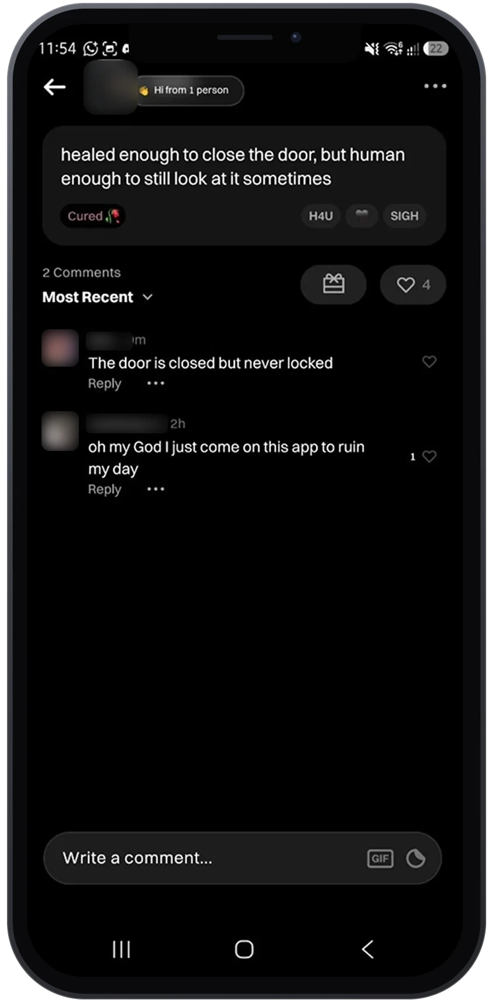

TalkLife
СайтAndroidiOS
- Що це
- Спільнота взаємопідтримки: дописи, особисті повідомлення, групові чати й відповіді цілодобово.
- Сильні сторони
- Простір «без осуду»; майже завжди хтось онлайн; сильні інструменти безпеки й модерації.
- Обмеження
- Сама зазначає, що не замінює професійної допомоги; в описі немає місцевих сервісів для мігрантів; у App Store інтерфейс лише англійською.

